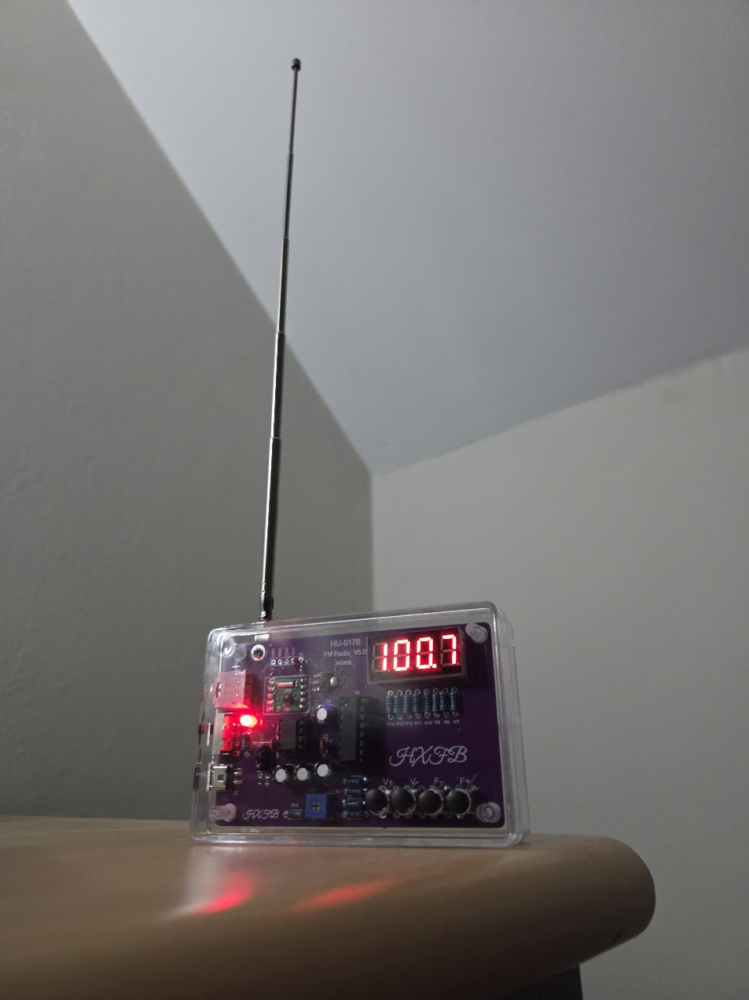

Radio
This is a personal project where a radio was built from a workshop kit. This was put together by soldering the components onto the circuit board, and then putting it together in a case. The project was made for fun, and to learn how to solder and build electronic devices. The radio can be used to listen to FM stations, and it has a simple design that makes it easy to use.

Back to projects